16 + 30 + 14 = 60. ✓ Thirteen Basics, eleven Supporters, one ACE SPEC, and nothing over four copies.
Thirteen Basics is a 16% mulligan. The opening seven holds a Binacle 32% of the time. Counting the first draw, 88% of hands hold a Binacle or a card that finds one, which is Fighting Gong, Poke Pad, or Ultra Ball. A Zygarde, or a Gong or Ultra Ball to find one, is there 75% of the time. Audino opens 22% of the time, and 40% counting Ultra Ball. Only 14% of opening hands hold no Energy, and Fighting Gong covers most of those.
Cornerstone Mask Ogerpon ex and Unfair Stamp carry mark H and rotate around April 2027. Everything else is I or J.
Pokémon
Mega Zygarde exx3
Set
ME03: Perfect Order 047/088
Rarity
Double Rare
Type
Fighting
HP
310
Stage
Basic
Weakness
Grass ×2
Retreat
2
Tournament
legal (Reg J)
Attack
Gaia Wave (200) - During your opponent's next turn, this Pokémon takes 30 less damage from attacks (after applying Weakness and Resistance).
Attack
Nullifying Zero - For each of your opponent's Pokémon, flip a coin. If heads, this attack does 150 damage to that Pokémon. (Don't apply Weakness and Resistance for Benched Pokémon.)
Gaia Wave does 200 for , and during the opponent's next turn this Pokémon takes 30 less damage from attacks, after Weakness and Resistance. It keeps its Energy, so the same Zygarde swings again next turn.
Nullifying Zero costs and flips a coin for each of the opponent's Pokémon; every heads is 150 to that Pokémon, with no Weakness or Resistance on the Bench. Core Memory adds a third attack, Geobuster, for 350. Gaia Wave or Geobuster says which to use.
Three copies, so a prized one still leaves two. Fighting Gong and Ultra Ball find it. Poke Pad can't, since it has a Rule Box.
Binaclex3
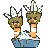
Set
ME03: Perfect Order 042/088
Rarity
Common
Type
Fighting
HP
80
Stage
Basic
Weakness
Grass ×2
Retreat
2
Tournament
legal (Reg J)
Attack
Double Draw - Draw 2 cards.
Attack
Scratch (30)
Basic, 80 HP, Grass Weakness, Retreat 2. Its job is becoming Barbaracle, so bench one on your first turn every game. A Pokémon can evolve from your second turn on, once it has sat in play for a turn.
Double Draw is for two cards. Going second with Binacle in front and nothing better to do, it is a fine turn-one attack.
Three copies. Fighting Gong, Poke Pad, and Ultra Ball all find it.
Barbaraclex3
Set
ME03: Perfect Order 043/088
Rarity
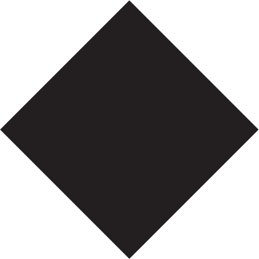
Uncommon
Type
Fighting
HP
130
Stage
Stage 1
Ability
Stone Arms - Once during your turn, you may use this Ability. Attach a Basic Fighting Energy card from your hand to 1 of your Fighting Pokémon.
Weakness
Grass ×2
Retreat
2
Tournament
legal (Reg J)
Attack
Hammer In (80)
Stage 1, 130 HP, Grass Weakness, Retreat 2. The engine.
Stone Arms attaches a Basic Fighting Energy from your hand to one of your Fighting Pokémon, once a turn for each Barbaracle. It is an Ability, so it costs no attack and no Supporter, and it reaches the Active Spot. Two Barbaracle and your attachment put three Energy on a Zygarde in one turn, which is a Gaia Wave from nothing. It can't feed Audino, which is Colorless.
Hammer In is 80 for . Barbaracle is not a Pokémon ex, so Crustle's Mysterious Rock Inn can't stop it, and it gives up one Prize.
Three copies, and two in play is the target. Poke Pad and Ultra Ball find it. It does nothing without Energy in your hand, which is what Fighting Gong, Tarragon, and Lunatone are for.
Mega Audino exx2
Set
ME: Ascended Heroes 172/217
Rarity
Double Rare
Type
Colorless
HP
270
Stage
Basic
Weakness
Fighting ×2
Retreat
1
Tournament
legal (Reg J)
Attack
Kaleidowaltz - Flip 3 coins. For each heads, search your deck for up to 2 Basic Energy cards and attach them to your Pokémon in any way you like. Then, shuffle your deck.
Attack
Ear Force (20+) - This attack does 80 more damage for each Energy attached to your opponent's Active Pokémon.
Basic Colorless, 270 HP, 3 Prizes, Fighting Weakness, Retreat 1. Fox's pick, and the deck's turn-one Energy.
Kaleidowaltz costs : flip 3 coins, and for each heads, search your deck for up to 2 Basic Energy and attach them to your Pokémon in any way you like. It averages 3 Energy, it reaches the Active and the Bench alike, and it comes up empty 1 time in 8. Going second, it loads a Zygarde before Barbaracle exists.
Ear Force is for 20, plus 80 for each Energy attached to the opponent's Active Pokémon. A Mega Excadrill ex holding four Energy takes 340, which is exactly its HP.
Only Ultra Ball finds it. It is Colorless, so Fighting Gong misses it, and it has a Rule Box, so Poke Pad does too. It is also a 3-Prize body that is weak to Fighting. Get it out of the Active Spot once its job is done, and against Elliot's Garchomp leave it in the deck.
Lunatonex2
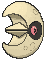
Set
ME: Ascended Heroes 105/217
Rarity
Rare
Type
Fighting
HP
110
Stage
Basic
Ability
Lunar Cycle - Once during your turn, if you have Solrock in play, you may discard a Basic Fighting Energy card from your hand in order to use this Ability. Draw 3 cards. You can't use more than 1 Lunar Cycle Ability each turn.
Weakness
Grass ×2
Retreat
1
Tournament
legal (Reg I)
Attack
Power Gem (50)
Basic, 110 HP, Grass Weakness, Retreat 1.
Lunar Cycle draws 3 cards once during your turn, if you have Solrock in play and discard a Basic Fighting Energy from your hand to use it. Only one Lunar Cycle works each turn, however many Lunatone you have. It is draw that doesn't spend your Supporter, and the Energy it discards is what Tarragon brings back.
Power Gem is 50 for . Two copies, beside two Solrock.
Solrockx2
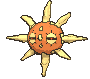
Set
ME: Ascended Heroes 106/217
Rarity
Uncommon
Type
Fighting
HP
110
Stage
Basic
Weakness
Grass ×2
Retreat
1
Tournament
legal (Reg I)
Attack
Cosmic Beam (70) - If you don't have Lunatone on your Bench, this attack does nothing. This attack's damage isn't affected by Weakness or Resistance.
Basic, 110 HP, Grass Weakness, Retreat 1. It switches Lunatone on.
Cosmic Beam is 70 for , and it does nothing unless Lunatone is on your Bench. Its damage ignores Weakness and Resistance. That makes it a one-Energy, single-Prize attacker that finishes anything 70 short, and with Barbaracle it is the Crustle answer. Two copies.
Cornerstone Mask Ogerpon exx1
Set
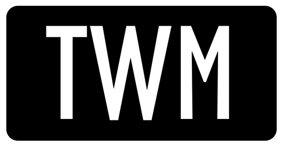
SV06: Twilight Masquerade 112/167
Rarity
Double Rare
Type
Fighting
HP
210
Stage
Basic
Ability
Tera As long as this Pokémon is on your Bench, prevent all damage done to this Pokémon by attacks (both yours and your opponent's). Ability — Cornerstone Stance Prevent all damage from attacks done to this Pokémon by your opponent's Pokémon that have an Ability.
Weakness
Grass ×2
Retreat
1
Tournament
legal (Reg H)
Attack
Demolish (140) - This attack's damage isn't affected by Weakness or Resistance, or by any effects on your opponent's Active Pokémon.
Cornerstone Stance prevents all damage from attacks by the opponent's Pokémon that have an Ability. Read their attacker's card before you commit. Demolish is for 140, and its damage ignores Weakness, Resistance, and any effects on the opponent's Active Pokémon.
It stops damage, not damage counters.Chaotic Pain and the Bench half of Phantom Dive still land. As a Tera Pokémon, it takes no damage from attacks while it sits on your Bench. One copy.
Trainers — Supporters
Lillie's Determinationx4
Set
ME01: Mega Evolution 119/132
Rarity
Uncommon
Type
Trainer - Supporter
Ability
Shuffle your hand into your deck. Then, draw 6 cards. If you have exactly 6 Prize cards remaining, draw 8 cards instead.
Tournament
legal (Reg I)
Shuffle your hand into your deck and draw six, or eight while you still have all six Prizes. Four copies. Going second, the turn-one Lillie's for eight is legal and good. Look at the hand first; one that already holds a Binacle, a Zygarde, and two Energy doesn't want shuffling.
Boss's Ordersx3
Set
ME01: Mega Evolution 114/132
Rarity
Uncommon
Type
Trainer - Supporter
Ability
Switch in 1 of your opponent's Benched Pokémon to the Active Spot.
Tournament
legal (Reg I)
Switch one of the opponent's Benched Pokémon into the Active Spot. Three copies. A 350 is only worth what it lands on. The best targets are the pieces that build their attacker, and a damaged Pokémon ex worth two or three Prizes.
Tarragonx3
Set
ME03: Perfect Order 085/088
Rarity
Uncommon
Type
Trainer - Supporter
Ability
Put up to 4 in any combination of Fighting Pokémon and Basic Fighting Energy cards from your discard pile into your hand.
Tournament
legal (Reg J)
Put up to 4 in any combination of Fighting Pokémon and Basic Fighting Energy cards from your discard pile into your hand. Three copies, Perfect Order 085, mark J.
This is how the deck gets its Energy back.Geobuster discards four and Lunar Cycle discards one a turn. Tarragon returns four at once, straight to your hand, where Stone Arms and your attachment spend them. It also returns a Knocked Out Zygarde, Barbaracle, or Binacle. Mix them; two Energy and a Barbaracle is often the right four.
Wally's Compassionx1
Set
ME01: Mega Evolution 132/132
Rarity
Uncommon
Type
Trainer - Supporter
Ability
Heal all damage from 1 of your Mega Evolution Pokémon ex. If you healed any damage in this way, put all Energy attached to that Pokémon into your hand.
Tournament
legal (Reg I)
Heal all damage from one of your Mega Evolution Pokémon ex, then put all Energy attached to it into your hand. One copy.
The best target is the Zygarde that just used Geobuster. It has no Energy left to lose, so Wally's is a full heal for free. On a loaded Zygarde, the Energy goes to your hand, and with two Barbaracle in play your attachment and two Stone Arms put three of it back on the same turn. That is a full heal and a Gaia Wave in one turn.
Trainers — Items
Fighting Gongx4
Set
ME01: Mega Evolution 116/132
Rarity
Uncommon
Type
Trainer - Item
Ability
Search your deck for a Basic Fighting Energy card or a Basic Fighting Pokémon, reveal it, and put it into your hand. Then, shuffle your deck.
Tournament
legal (Reg I)
Search your deck for a Basic Fighting Energy or a Basic Fighting Pokémon. Four copies. It finds Zygarde, Binacle, Lunatone, Solrock, Ogerpon, and Energy. It can't find Barbaracle, which is a Stage 1, or Audino, which is Colorless. On turn one it is a Binacle or a Zygarde; after that it is the Energy for Stone Arms.
Poke Padx4
Set
ME03: Perfect Order 081/088
Rarity
Uncommon
Type
Trainer - Item
Ability
Search your deck for a Pokémon that doesn't have a Rule Box, reveal it, and put it into your hand. Then, shuffle your deck. (Pokémon ex, Pokémon V, etc. have Rule Boxes.)
Tournament
legal (Reg J)
Search your deck for a Pokémon without a Rule Box. Four copies, printed Poké Pad, Perfect Order 081, mark J. It finds Binacle, Barbaracle, Lunatone, and Solrock, and never Zygarde, Audino, or Ogerpon. It is the main road to Barbaracle.
Pokegear 3.0x4
Set
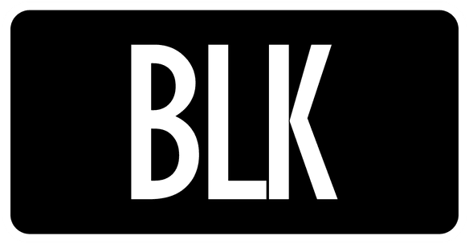
SV: Black Bolt 084/086
Rarity
Uncommon
Type
Trainer - Item
Ability
Look at the top 7 cards of your deck. You may reveal a Supporter card you find there and put it into your hand. Shuffle the other cards back into your deck.
Tournament
legal (Reg I)
Look at the top 7 cards of your deck and put a Supporter you find there into your hand. Four copies, Black Bolt 084, mark I. With eleven Supporters, it hits 88% of the time early and 95% by mid-game. It is how Tarragon arrives on the turn after a Geobuster.
Switchx2
Set
ME01: Mega Evolution 130/132
Rarity
Common
Type
Trainer - Item
Ability
Switch your Active Pokémon with 1 of your Benched Pokémon.
Tournament
legal (Reg I)
Switch your Active Pokémon with one of your Benched Pokémon. Two copies. Zygarde and Barbaracle both retreat for 2, and Retreat is paid in Energy the next attack needs. Switch pays in a card instead. Its main jobs are moving Audino out once the Zygarde is loaded, and pulling an empty Zygarde back after Geobuster.
Ultra Ballx2
Set
ME01: Mega Evolution 131/132
Rarity
Common
Type
Trainer - Item
Ability
You can use this card only if you discard 2 other cards from your hand. Search your deck for a Pokémon, reveal it, and put it into your hand. Then, shuffle your deck.
Tournament
legal (Reg I)
Discard 2 other cards from your hand, then search your deck for any Pokémon. Two copies. It is the only card that finds Audino. The discard costs less here than in most decks, because Energy you discard is Energy Tarragon brings back.
Unfair Stampx1
Set
SV06: Twilight Masquerade 165/167
Rarity
ACE SPEC Rare
Type
Trainer - Item
Ability
You can use this card only if any of your Pokémon were Knocked Out during your opponent's last turn. Each player shuffles their hand into their deck. Then, you draw 5 cards, and your opponent draws 2 cards.
Tournament
legal (Reg H)
Play it only if one of your Pokémon was Knocked Out during your opponent's last turn. Each player shuffles their hand into their deck, then you draw 5 and your opponent draws 2. The ACE SPEC, Twilight Masquerade 165, mark H.
It is the comeback card. They take a Zygarde with a hand full of the pieces for the next hit, and Stamp leaves them two cards to find it. It is an Item, so you still get your Supporter after it. Bench what you want to keep first, because it shuffles your hand too.
Trainers — Tool & Stadium
Core Memoryx2
Set
ME03: Perfect Order 070/088
Rarity
Uncommon
Type
Trainer - Pokémon Tool
Ability
The Mega Zygarde ex this card is attached to can use the attack on this card. (You still need the necessary Energy to use this attack.)
Tournament
legal (Reg J)
The Mega Zygarde ex this card is attached to can use Geobuster: 350 for , and discard all Energy from this Pokémon. Two copies. One of the two is prized in 18% of games, and both in under 1%.
Being a Tool, it stays attached when the Energy goes, so the next Geobuster from the same Zygarde needs only four more Energy. If that Zygarde is Knocked Out, the Tool goes to the discard pile with it. The deck runs no Stadium.
Energy
Basic Fighting Energyx14
Set
MEE: Mega Evolution Energies 6
Rarity
Common
Type
Energy - Basic
Tournament
legal
Fourteen. Your attachment, Stone Arms, and Lunar Cycle all spend Energy from your hand, so the hand is where the count matters. Fighting Gong fetches it, Tarragon returns it, and only Kaleidowaltz moves it straight from the deck to the board. Any Basic Fighting print works.
The Thesis
Mega Zygarde ex is a Basic with 310 HP that hits for 200 and takes 30 less on the way back. The catch is the price. Gaia Wave costs three Energy, Geobuster four, and Nullifying Zero five, so a deck that attaches one Energy a turn throws its first real punch on turn three.
Barbaracle makes it turn two, going first or second. Bench a Binacle on turn one and attach an Energy to a Zygarde. On turn two, evolve, attach, and use Stone Arms, and the Zygarde has the three Energy Gaia Wave needs. With two Barbaracle it has four, which is Geobuster.
Attack
Cost
Damage
One-shots
Gaia Wave
200
anything Fighting-weak up to 400, which is every Darkness Pokémon in Gengar Gang
Geobuster, with Core Memory
350
Dragapult ex 320, Cynthia's Garchomp ex 330, Mega Excadrill ex 340
Nullifying Zero
150 per heads
a coin for every Pokémon they have in play
Hammer In, Barbaracle
80
not an ex, so Crustle can't stop it
Cosmic Beam, Solrock
70
ignores Weakness and Resistance
Gaia Wave is the attack most turns. It keeps its Energy, and its shield means their answer has to deal 340 in one hit. Geobuster is the finisher for the big ex that Gaia Wave needs two turns for, and it pays with every Energy on the Zygarde. Tarragon and Stone Arms pay that back in one turn.
A Mega gives up 3 Prizes, so losing two of them loses the game. Most of the big attackers in the field are 2-Prize ex or 3-Prize Megas, and against those, Fox's six Prizes are two or three knockouts. The Prize Tax covers the rest.
The Hard Rules
A few rules decide most games with this deck. The card sections explain the cards; this section explains the decisions.
Opening turns
When
Do this
Setup
Going second with Audino in hand, lead Audino. Otherwise lead a Zygarde. Bench every Binacle you hold.
Your first turn
A Binacle goes down before anything else, because it has to sit a turn before it evolves. Attach to the Zygarde that attacks next turn.
First turn, going second
Attack with what is in front. Kaleidowaltz from Audino, Double Draw from Binacle, or Cosmic Beam from Solrock with Lunatone on the Bench. Play Lillie's for eight unless the hand already holds its line.
First turn, going first
Items and Tools only. Core Memory can go on the Zygarde now.
Second turn
Evolve, attach, use Stone Arms, and attack. Use Lunar Cycle first only when the hand holds an Energy you won't need this turn.
Where the Energy goes
Rule
Why
Stone Arms goes on the Active Zygarde first.
Stone Arms, your attachment, and Kaleidowaltz are the only things that reach the Active Spot.
Keep Energy in hand for next turn.
Two Barbaracle and your attachment spend three a turn. Fighting Gong finds one, and Tarragon finds four.
Lunar Cycle only discards a spare.
The card it throws away is next turn's Stone Arms. Tarragon brings it back, but that costs your Supporter.
Never retreat a loaded Zygarde.
Retreat 2 is paid in Energy the next attack needs. Use Switch.
Kaleidowaltz loads Zygarde, not Audino.
Unless Ear Force is the plan, Energy on Audino only pays its Retreat Cost.
Gaia Wave or Geobuster
Their Active
Use
Why
200 HP or less, or Fighting-weak up to 400
Gaia Wave
it kills, keeps every Energy, and shields
201 to 350 HP, and your Zygarde survives its hit
Gaia Wave
two of them kill it and keep the Energy
201 to 350 HP, and its next hit kills your Zygarde
Geobuster
a knockout now beats a shield
Over 350
Gaia Wave, then finish
Geobuster can't one-shot it either; Solrock or Hammer In finishes
Never Geobuster twice in a row out of habit. Two Gaia Waves kill everything one Geobuster does, and they keep the Energy.
The Prize Tax
Pokémon
Prizes it gives up
Mega Zygarde ex, Mega Audino ex
3
Cornerstone Mask Ogerpon ex
2
Binacle, Barbaracle, Lunatone, Solrock
1
Six Prizes is two Megas. Every Mega on your Bench is half the game sitting where Boss's Orders can reach it.
One Zygarde in front. The next one comes down when the first is about to go, not before.
Bench Audino only on a turn it attacks. An Audino with its job done is 3 Prizes for a Boss's Orders.
The single-Prize bodies are what they should be hitting. A Barbaracle knocked out costs 1 Prize, and Tarragon brings it back.
The Energy Engine
Source
From
To
Costs
Your attachment
hand
any of your Pokémon
once a turn
Stone Arms
hand
a Fighting Pokémon, Active or Benched
nothing; once per Barbaracle
Kaleidowaltz
deck, 0 to 6
any of your Pokémon
Audino's attack
Fighting Gong
deck
hand
an Item
Tarragon
discard pile, up to 4
hand
your Supporter
Wally's Compassion
a healed Mega
hand
your Supporter
Lunar Cycle
hand
discard pile
one Energy, for three cards
Two Barbaracle and your attachment can spend three Energy a turn, so the hand runs dry before the board does. Gong adds one a turn, and Tarragon adds four at once.
The discard pile is stock, not loss. Everything Geobuster and Lunar Cycle throw away is what Tarragon looks for next.
Game Plans
1. Turn one, going second
You can attack on your first turn going second, and the deck has two openers.
With Audino in front, attach to it and use Kaleidowaltz. Put every Energy it finds on the Zygarde that attacks next turn.
Otherwise, bench a Binacle and a Zygarde, attach to the Zygarde, and attack with whatever is in front if it helps. Double Draw from a Binacle and Cosmic Beam from a Solrock both work. Play Lillie's while it still draws eight.
Either way, a Binacle goes down on turn one.
2. Turn one, going first
You can't attack or play a Supporter, and every Item and Tool is still legal. Poke Pad and Fighting Gong take Binacle first, then a Zygarde. Attach to the Zygarde and put Core Memory on it. Turn two is the same Gaia Wave as going second.
3. The Audino opening
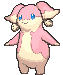
Audino opens 22% of the time, and 40% counting Ultra Ball. Going second, it is the fastest start the deck has.
Turn one: attach to Audino, since Kaleidowaltz costs one, and put everything it finds on a benched Zygarde. Three is the average.
Turn two: retreat Audino for its one Energy, or Switch it out. Attach to the Zygarde, add a Stone Arms if Barbaracle is up, and that is four or five Energy, which is Geobuster.
Get Audino out of the Active Spot as soon as the Zygarde is loaded. It is 270 HP, weak to Fighting, and worth 3 Prizes. Later it becomes a refuel. When the deck still holds Energy and your hand doesn't, Switch it in and Kaleidowaltz again.
4. After Geobuster
Geobuster costs every Energy on the Zygarde. With two Barbaracle, you pay it back in one turn.
The Zygarde that swung is empty but alive, and the discard pile holds four more Energy than it did. Choose the Supporter by the damage on it.
Healthy: Tarragon. Four back to your hand. Attach one, Stone Arms two, and it has three Energy for Gaia Wave.
Damaged: Wally's Compassion. It has nothing left to lose, so the heal is free. Stone Arms and your attachment then load it from whatever Energy is in hand.
Neither in hand: Pokegear 3.0 first. With eleven Supporters it usually finds one of them.
5. Bench discipline
The Bench holds five, and a working board fills it: two Barbaracle, Lunatone, Solrock, and one spare.
The spare slot is a Binacle while a Barbaracle is missing, and the next Zygarde once the first is in trouble.
Audino sits on the Bench only when it has to, per The Prize Tax.
Against Chaotic Pain and Phantom Dive, bench a Binacle only when it evolves next turn. A Binacle waiting on the Bench is a free Prize.
Versus the Kitchen Table
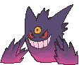
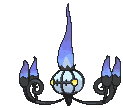
Xero's decks, from Fox's side of the table. Several of his pages carry their own "Fox's Ground Zero" sections, written from the other chair. Read them before a game; they are the plan he is bringing.
Every Darkness Pokémon in it is weak to Fighting.Gaia Wave lands as 400 and one-shots Okidogi ex at 250, Gengar ex at 280, and Mega Gengar ex at 350. A Mega Gengar in Hero's Cape is 450 and needs Geobuster.
Chaotic Pain kills every engine piece in one shot. It places 13 damage counters on any Pokémon, and Binacle is 80, Lunatone and Solrock are 110, and Barbaracle is exactly 130. Keep a second Barbaracle coming.
Shadowy Concealment takes a Prize off every knockout your Pokémon ex score while a Mega Gengar is in play. Barbaracle, Solrock, Lunatone, and Binacle take the full count.
Fainting Spell flips a coin at whatever knocks out a Gengar ex. Heads, the attacker is Knocked Out too. Finish a damaged Gengar ex with a Solrock or Barbaracle and the bet is 1 Prize, not 3.
Both Gengars have Abilities, so neither can damage Ogerpon with an attack.Chaotic Pain places counters, so it still reaches Ogerpon. Okidogi ex has no Ability and hits it normally.
Risky Ruins puts 2 damage counters on every Basic you bench while it is in play. Everything in this deck is a Basic except Barbaracle.
The lantern decks. Mega Chandelure ex resists Fighting by 30, so Gaia Wave lands as 170 and Geobuster as 320 on its 350. Two Gaia Waves leave it on 10, and Solrock's Cosmic Beam and Ogerpon's Demolish ignore Resistance to finish it. Binding Flame adds one to your Active's Retreat Cost, and Phantom Maze is 130 plus 50 for each , so a Zygarde in front takes 280, or 250 after Gaia Wave. Binding Flame is an Ability, so Chandelure can't damage Ogerpon.
Versus the Card Shop
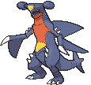
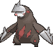
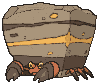
The Wednesday league at CardCrate draws from this field. Mega Zygarde is a fringe deck, about 0.1% of the online ladder with a 38-46% win rate since Perfect Order. Each opponent page below has the pilot's full plan.
Draconic Buster is 260, plus 30 for each Roserade and 30 for Premium Power Pro. Roserade's Leaf Step is Grass, and every Fighting Pokémon here is weak to it.
Geobuster kills a bare Garchomp at 330. Cynthia's Power Weight makes it 400, which two Gaia Waves reach exactly. Audino is weak to Fighting and stays in the deck.
Crustle
Mysterious Rock Inn prevents all damage from Pokémon ex. Superb Scissors is 120, doubles into Zygarde's Grass Weakness, and ignores Gaia Wave's shield.
Barbaracle's Hammer In at 80 and Solrock's Cosmic Beam at 70 are not ex, and together they kill its 150.
Test and Tune
The list is a hypothesis, and games on Live are the data.
Symptom
Fix
Barbaracle keeps arriving late
4th Barbaracle over a Pokegear 3.0
Audino rarely opens
Mega Signal over a Pokegear 3.0; it finds Audino or a Zygarde
Hands run out of Energy for Stone Arms
15th Basic Fighting Energy over a Pokegear 3.0
Chaotic Pain or Phantom Dive keeps killing the Bench
Battle Cage over a Pokegear 3.0
Kaleidowaltz finds nothing late because the deck is out of Energy
Energy Recycler over a Pokegear 3.0
Home games against Gengar Gang keep going long
Hero's Cape over Unfair Stamp
Audino keeps getting Boss'd for 3 Prizes
cut to one Audino and add back one Acerola's Mischief
Alternatives
Card
Swaps for
Play it when
Acerola's Mischief (Mega Evolution 113), 2
the 2 Mega Audino ex
you want the published list as it was. It works only once your opponent has 2 or fewer Prizes left, and for a turn one of your Pokémon takes no damage or effects from their Pokémon ex.
Cinderace (Mega Evolution 028), with a Mega Lucario ex line
Binacle, Barbaracle, Lunatone, and Solrock
not for now. It was this page's first build. Turbo Flare puts three Energy on the Bench on turn one, but only going second, and its refuel after Geobuster was Mega Lucario ex, which Fox doesn't like.
Hero's Cape (ACE SPEC)
Unfair Stamp
home nights. A Zygarde in the Cape has 410 HP, and after Gaia Wave the next hit has to deal 440.
Battle Cage
a Pokegear 3.0
Chaotic Pain or Phantom Dive keeps killing the Bench. It stops damage counters that attacks and Abilities place on Benched Pokémon, on both sides. Xero's Risky Ruins replaces it.
Mega Signal
a Pokegear 3.0
Audino should open more. It searches out any Mega Evolution Pokémon ex.
Energy Recycler
a Pokegear 3.0
the deck runs out of Energy for Gong and Kaleidowaltz. It shuffles 5 Basic Energy from the discard pile back into the deck.
Bloodmoon Ursaluna (Shrouded Fable 025)
the Ogerpon
Crustle shows up. It is not an ex. Battle-Hardened attaches up to 2 Basic Fighting Energy from your hand when you bench it, and Mad Bite is 100 plus 30 for each damage counter on their Active.